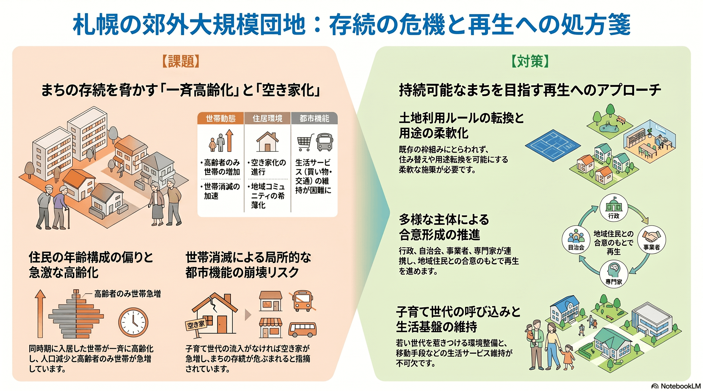

都心再開発・まちづくり
10年以内
郊外大規模住宅団地の高齢化と再生
同時期に開発された団地で住民が一斉に高齢化し、まちの存続が危ぶまれる。

背景
高度成長期に短期間で大量供給された郊外団地は、入居世帯の年齢層が偏ったまま一斉に高齢化している。子育て世代の流入が進まなければ、世帯消滅による空き家化が一気に進む恐れがある。
事実
- 同一時期に大量供給された郊外住宅団地で、入居世帯の年齢階層が偏り、急激な高齢化と人口減少、高齢者のみ世帯の増加に直面している。
- 再生が進まず新たな居住者の入居がない場合、世帯消滅による空き家増加がまちの存続危機につながる恐れがあると札幌市は指摘している。
解釈
郊外団地は都心とは異なる時間軸で縮小しており、放置すれば局所的に都市機能が崩れる。土地利用ルールの転換を含む再生策が要る。
提案
- 土地利用転換や用途の柔軟化による団地再生（既存住民との合意形成が必要）。
- 子育て世代の呼び込みと生活サービスの維持。
検討体制・メンバー
札幌市都市局・まちづくり政策局が郊外住宅地施策を担う。検討会には団地の自治会・住民、不動産・住宅事業者、まちづくりの専門家、子育て・福祉・交通の部局を入れ、住み替えと用途転換を地域と合意しながら進める必要がある。
AIノート
AIの貢献度は中。空き家・世帯動態の把握と将来予測、需要に応じた生活サービス（買い物・移動）の設計に役立つ。デマンド交通やオンライン見守りで生活を支えられるが、団地再生は住民の合意と投資が前提で、AIは判断材料の提供役。